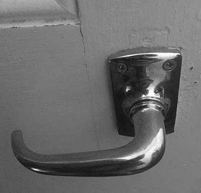
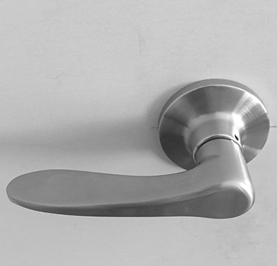
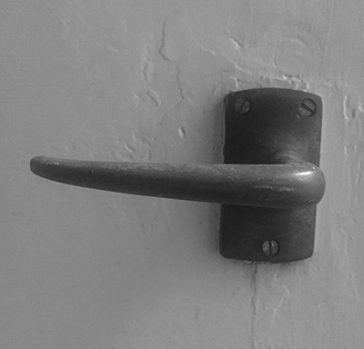
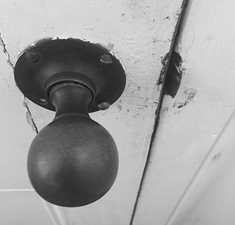
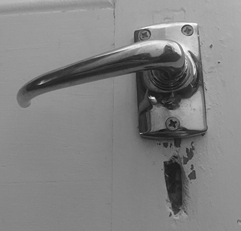
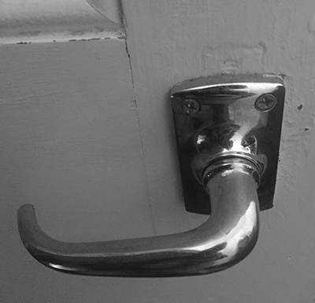
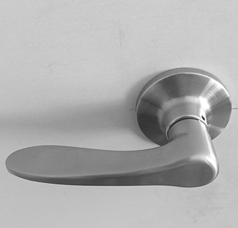
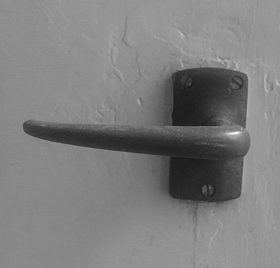
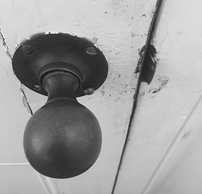
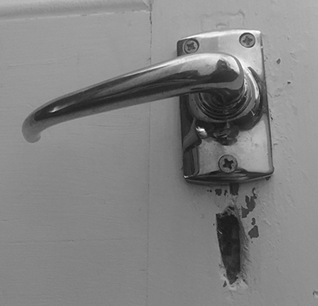
top-link
THE INTERNET
When relating a handle to the internet, it may appear to be an irrelevant metaphor. In the physical world, handles are used for opening and closing content at the user’s desire; much like a handle in the digital is effectively a means of opening a tab, searching content and selecting pages. These handles provide a means for accessing information and offer individuals the ability to obtain particular data.
images-link
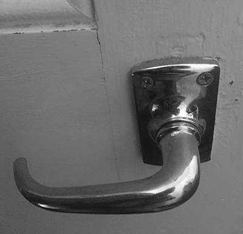
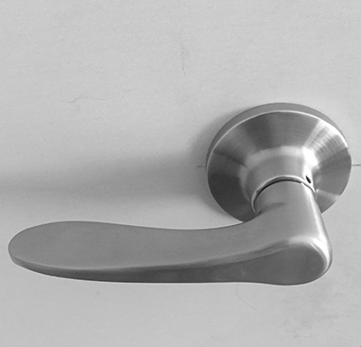
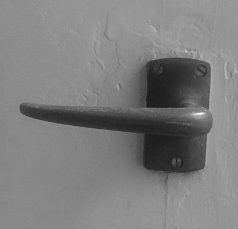
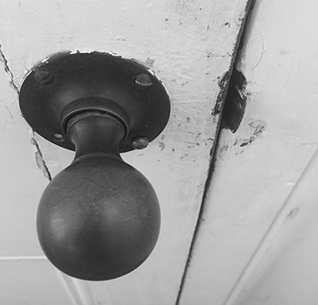
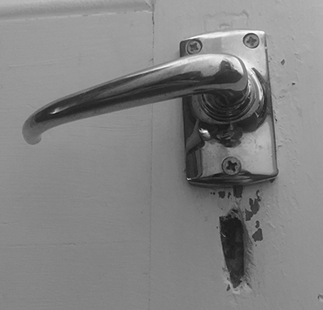